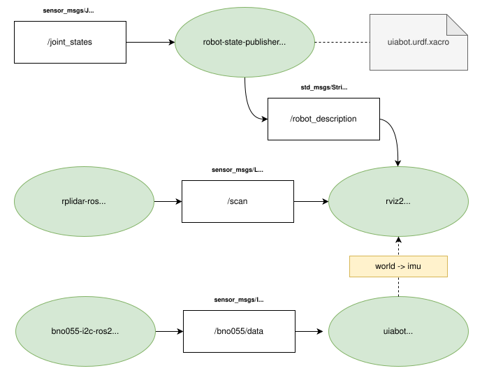
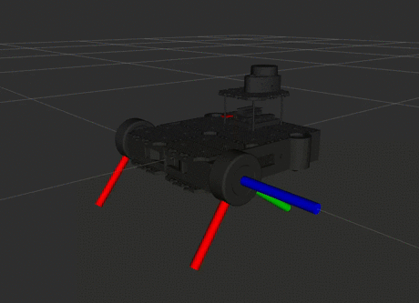
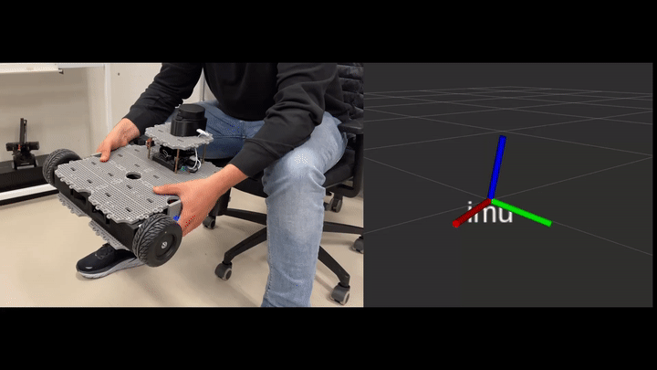
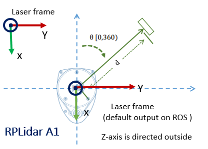
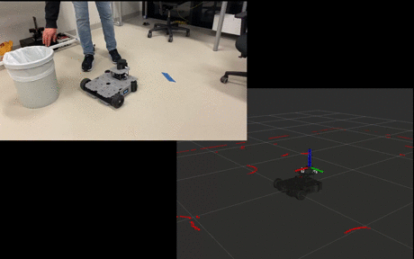

Perception
The concept of percetion, in the field of robotics, is to organize, identify and interpret sensor information in order to represent and understand the robot’s surrounding environment. This is a crucial factor in any robotic system that is supposed to do autonomous tasks.
The UiAbot perception system is a complex integration of various sensors, each of which feeds data into the ROS 2 ecosystem for comprehensive environmental awareness. The figure below illustrates the connection between sensor data, ROS 2 nodes, and the visualization tools used to represent sensor data in Rviz2.
{kind=link}

Figure: Diagram illustrating the UiAbot perception system integrated with ROS 2. Note: The wheel_tf_publisher node (which publishes joint states) is not shown in this diagram but is part of the complete perception pipeline.
The UiAbot has the following sensors installed and implemented in this project:
Wheel Encoders
The installed rotary encoders is of type incremental, meaning they emit pulses, or ticks, as they spin. These ticks has to be counted on a processing unit in order to get the encoder position. Incremental encoders are cheaper than their counterpart, absolute encoders, but are limited to measuring change in position (relative). Anyhow, for the UiAbot we use these sensors to measure actual wheel speed.
The CUI AMT102 encoder has customizeable quadrature resolution up to 2048 PPR, which can be selected by the physical DIP-switches. The combined CPR depends on the unit that is processing the pulses from the encoder. For a quadrature encoder it is possible to get a total 4xPPR. On our UiAbot, the encoder is set to 2048 PPR and the ODrive board maximizes this with hardware-interrupts on both falling and rising edges, which results in a total of 8192 CPR.
The implementation of the encoder was done by extending the odrive_ros2 node with a publisher that emits all the necessary feedback data (motor position and velocity). The feedback data is published with msg-type `std_msgs/Float32 <http://docs.ros.org/en/noetic/api/std_msgs/html/msg Float32.html>`_on the relevant topics for each axis, as seen in figure above.
To visualize wheel motion in Rviz2, an URDF is created with the mesh of the UiAbot including all relevant frames and their pose relative to base_link.
The wheel joint state publishing functionality has been separated into a dedicated wheel_tf_publisher node. This node reads the wheel encoder data and publishes the position of the two wheel joints as a sensor_msgs/JointState message on the /joint_states topic.
Then, using the built-in robot_state_publisher with the URDF as an argument, the correct transforms are automatically updated and published to the /robot_description topic. Additionally, the static and dynamic TF’s based on the URDF are broadcasted for later usage.
The /robot_description topic can then be subscribed to in Rviz2 on the remote PC, which then will visualize the robot and all its frames dynamically.
{kind=link}

Figure: Wheel encoder visualization in Rviz2.
Note
Commands to run the wheel transform publishing pipeline:
First, run the following command on the jetson to run the
wheel_tf_publishernode to publish joint states:
ros2 run uiabot wheel_tf_publisher
Then, run the following command on the jetson to run the
robot_state_publishernode to broadcast transforms:
# First, process the xacro file to generate URDF XML
xacro $(ros2 pkg prefix uiabot)/share/uiabot/urdf/wheel.urdf.xacro > /tmp/wheel.urdf
# Then run robot_state_publisher with the processed URDF
ros2 run robot_state_publisher robot_state_publisher --ros-args \
-p robot_description:="$(cat /tmp/wheel.urdf)"
Run the following command on the remote pc to visualize in RViz2:
rviz2
Then in RViz2:
Set Fixed Frame to
base_linkin the Global OptionsAdd a RobotModel display by clicking “Add” → “By display type” → “RobotModel”
Set the Description Topic to
/robot_descriptionAdd a TF display by clicking “Add” → “By display type” → “TF”
Enable “Show Names” and “Show Axes” in the TF display properties
You should see the robot mesh with wheel joints that update based on encoder feedback
Note: The above commands only visualize encoder feedback. To actually drive the wheels and see them moving (as shown in the GIF above), follow the teleoperation instructions in the Motion Control section.
Inertial Measurement Unit (IMU)
The IMU consists of an accelerometer, gyroscope and magnetometer. Each of the three sensors are 3-axis resulting in a total 9DOF sensor. Additionally, the BNO055 has an onboard processing unit which calculates the absolute orientation of the sensor in 3D-space. In the UiAbot project, the IMU is used to achieve a more accurate heading measurement.
There are two possible communication peripherals on the chip, UART and I²C. In our case, it was preferred to use the default I²C interface. There is a ROS2 package that already exists, in which implements the I²C communication with the IMU, but due to some calibration problems it did not perform very well on our system. The solution was to rewrite a ROS(1) package to be usable with ROS2. This package was named bno055-i2c-ros2 and has a node, equally named, that publishes the same data as the original ROS(1) node.
The IMU is connected to I²C bus 1 on the jetson. Checking with the following command on the jetson: i2cdetect -y -r 1 should return a device with ID=28.
As seen in the diagram on top, the used topic is the /bno055/data, which consists of the fused and filtered absolute data from the IMU.
Visualizing the IMU orientation was done by the creation of an additional node in the uiabot-ros2 package, named imu_tf_viz. This node broadcasts the TF of an imu frame relative to a fixed bno055 frame, which then can be seen in Rviz2 on the remote PC.
{kind=link}

Figure: IMU orientation visualization in Rviz2.
Note
Commands to visualize IMU orientation:
Run the following command on the jetson to run the IMU driver node:
ros2 run bno055_i2c_ros2 bno055_i2c_ros2
Run the following command on the jetson to run the IMU visualization node:
ros2 run uiabot imu_tf_viz
Run the following command on the remote pc to visualize in RViz2:
rviz2
Then in RViz2:
Set Fixed Frame to
bno055in the Global OptionsTo visualize IMU data, you have several options:
Option 1: Use TF display (recommended) The
imuframe shows the IMU orientation through the TF display: - Add a TF display by clicking “Add” → “By display type” → “TF” - Enable “Show Names” and “Show Axes” in the TF display properties - You should see theimuframe rotating relative to the fixedbno055frame - This method works out-of-the-box without additional pluginsOption 2: Install IMU plugin If you want a dedicated IMU visualization display:
sudo apt install ros-humble-rviz-imu-plugin
After installation, restart RViz2 and the Imu display type should appear in the Add menu. Then set the topic to
/bno055/data.
Note: The imu_tf_viz node is only used during this section to visualize IMU orientation alone and is not a part of the complete system.
LiDAR
In order to be able to perform localization in, as well as mapping, the robot’s environment, the UiAbot has a LiDAR from Slamtech installed. A LiDAR is a method for determining ranges (variable distance) by targeting an object or a surface with a laser and measuring the time for the reflected light to return to the receiver.
The RPLiDAR A1 is a 360 degree 2D laser which is capable of measuring distances up to 12 meters. The scan rate defaults to 5.5 Hz, which results in 8000 samples per second and an angular resolution of about 1 degree.

Figure: RPLiDAR A1 frame configuration.
To get the LiDAR on the ROS2 network, a package made by Slamtech is used. The package is named rplidar_ros and
its installation instructions is stated in installation. Launching the rplidar_composition node using the built-in launch file with default arguments,
will publish a sensor_msgs/LaserScan message to the /scan topic. This message has a
frame_id parameter that defaults to bno055. This frame is set up as a static link in the robot’s URDF using the same name. The orientation of of the broadcasted frame match with the figure above.
The laser scan visualization in Rviz2 on the remote PC is done by adding a LaserScan subscriber to the /scan topic.
{kind=link}

Figure: Laser scan visualization in Rviz2.
Note
Commands to visualize LiDAR data:
Run the following command on the jetson to launch the RPLiDAR node:
ros2 launch rplidar_ros rplidar_a1_launch.py
Run the following command on the remote pc to visualize in RViz2:
rviz2
Then in RViz2:
Set Fixed Frame to
laserin the Global OptionsAdd a LaserScan display by clicking “Add” → “By display type” → “LaserScan”
Set the Topic to
/scan- Adjust visualization properties as desired:
Size: for point size
Style: Points, Flat Squares, or Spheres
Color Transformer: Intensity or FlatColor
You should see the laser scan data as points around the robot showing detected obstacles
Note: The execution of this node is integrated in custom UiAbot launch files instead of using the launch file from the rplidar_ros package.
Visualizing mechanical odometry, LiDAR, and IMU
This guide launches all nodes required to drive the UiAbot remotely using the pc keyboard, in addition to the sensor nodes for the LiDAR and IMU. It also launches the mechanical odometry node which calculates the robot position relative to the intial frame. The robot description is also published to the network, which enables the visualization in RViz on the remote PC.
Run the following command on the jetson to launch the control and sensor nodes:
ros2 launch uiabot teleop_perception.launch.py
Run the following command on the remote pc to launch RViz:
rviz2 -d $(ros2 pkg prefix uiabot)/share/uiabot/rviz/perception.rviz